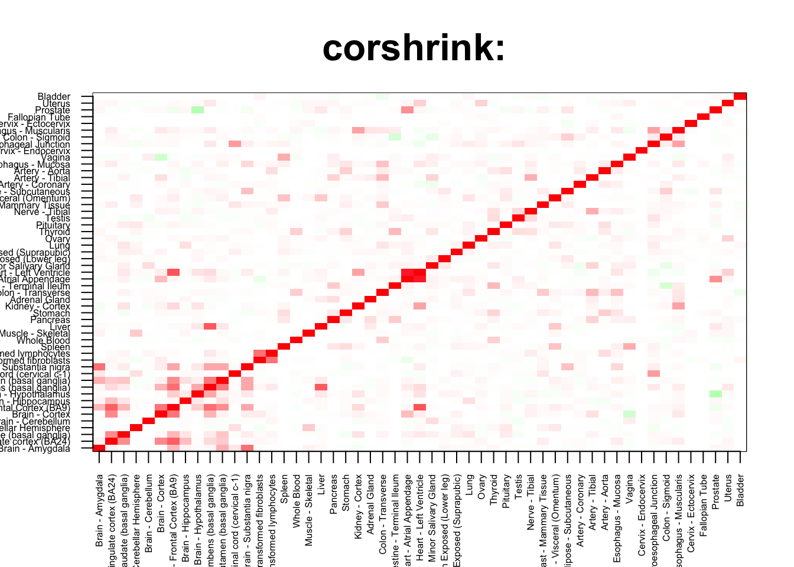

rm(list=ls())
corshrink_data <- get(load("../output/ash_cor_only_voom_pearson_normal_gtex_tissues.rda"))
cor_data <- get(load("../output/cor_tissues_non_ash_voom_pearson.rda"))common_samples <- get(load("../output/common_samples.rda"))
tissue_labels <- read.table(file = "../data/GTEX_V6/samples_id.txt")[,3]
#library(data.table)
#data <- data.frame(fread("../data/GTEX_V6/cis_gene_expression.txt"))
#matdata <- t(data[,-c(1,2)])
gene_names <- as.character(read.table(file = "../data/GTEX_V6/gene_names_GTEX_V6.txt")[,1])
gene_names_1 <- as.character(sapply(gene_names, function(x) return(strsplit(x, "[.]")[[1]][1])))
U <- unique(tissue_labels)tab <- array(0, dim(corshrink_data)[3])
heart_set <- grep("Heart", U)
for(m in 1:dim(corshrink_data)[3]){
temp <- corshrink_data[heart_set, heart_set, m]
temp1 <- corshrink_data[order_index[-(1:13)], order_index[-(1:13)],m]
tab[m] <- median(temp[row(temp) > col(temp)]) - median(temp1[row(temp1) > col(temp1)])
}
ordering_high <- order(tab, decreasing = TRUE)[1:100]
ordering_low <- order(tab, decreasing = FALSE)[1:100]top_gene <- gene_names_1[ordering_high[1]]
col=c(rev(rgb(seq(1,0,length=1000),1,seq(1,0,length=1000))),
rgb(1,seq(1,0,length=1000),seq(1,0,length=1000)))
image(as.matrix(corshrink_data[order_index,order_index, ordering_high[1]]),
col=col, main=paste0("corshrink: "), cex.main=2,
xaxt = "n", yaxt = "n", zlim=c(-1,1))
axis(1, at = seq(0, 1, length.out = 53), labels = U[order_index], las=2, cex.axis = 0.5)
axis(2, at = seq(0, 1, length.out = 53), labels = U[order_index], las=2, cex.axis = 0.5)
bottom_gene <- gene_names_1[ordering_low[1]]
col=c(rev(rgb(seq(1,0,length=1000),1,seq(1,0,length=1000))),
rgb(1,seq(1,0,length=1000),seq(1,0,length=1000)))
image(as.matrix(corshrink_data[order_index,order_index, ordering_low[1]]),
col=col, main=paste0("corshrink: "), cex.main=2,
xaxt = "n", yaxt = "n", zlim=c(-1,1))
axis(1, at = seq(0, 1, length.out = 53), labels = U[order_index], las=2, cex.axis = 0.5)
axis(2, at = seq(0, 1, length.out = 53), labels = U[order_index], las=2, cex.axis = 0.5)high_heart_nonheart_genes <- gene_names_1[ordering_high]
low_heart_nonheart_genes <- gene_names_1[ordering_low]
write.table(cbind.data.frame(high_heart_nonheart_genes), quote = FALSE, file = "../utilities/heart_nonheart/high_heart_nonheart.txt", row.names = FALSE, col.names = FALSE)
write.table(cbind.data.frame(low_heart_nonheart_genes), quote = FALSE, file = "../utilities/heart_nonheart/low_heart_nonheart.txt", row.names = FALSE, col.names = FALSE)tab <- read.delim("../utilities/heart_nonheart/pathway_high.tab")
head(cbind.data.frame(tab$pathway, tab$q.value), 10)## tab$pathway
## 1 Integrin
## 2 Formation of the cornified envelope
## 3 EGFR1
## 4 Aldosterone-regulated sodium reabsorption - Homo sapiens (human)
## 5 Focal Adhesion
## 6 Focal adhesion - Homo sapiens (human)
## 7 Keratinization
## 8 PDGFR-beta signaling pathway
## 9 Sphingolipid Metabolism
## 10 Signaling by NODAL
## tab$q.value
## 1 0.04221750
## 2 0.04221750
## 3 0.04221750
## 4 0.05994840
## 5 0.09830775
## 6 0.09830775
## 7 0.09830775
## 8 0.09830775
## 9 0.09830775
## 10 0.09830775tab <- read.delim("../utilities/heart_nonheart/GO_high.tab")
head(cbind.data.frame(tab$term_name, tab$q.value), 10)## tab$term_name tab$q.value
## 1 intercalated disc 0.0001920839
## 2 desmosome 0.0003201332
## 3 protein binding involved in heterotypic cell-cell adhesion 0.0002191457
## 4 cell-cell contact zone 0.0003502631
## 5 protein binding involved in cell-cell adhesion 0.0006668701
## 6 bundle of His cell to Purkinje myocyte communication 0.0039072680
## 7 homotypic cell-cell adhesion 0.0039072680
## 8 epithelial cell-cell adhesion 0.0039072680
## 9 protein binding involved in cell adhesion 0.0032437213
## 10 cell communication involved in cardiac conduction 0.0161137270tab <- read.delim("../utilities/heart_nonheart/pathway_low.tab")
head(cbind.data.frame(tab$pathway, tab$q.value), 10)## tab$pathway
## 1 Respiratory electron transport
## 2 Huntington,s disease - Homo sapiens (human)
## 3 Electron Transport Chain
## 4 Respiratory electron transport, ATP synthesis by chemiosmotic coupling, and heat production by uncoupling proteins.
## 5 Complex I biogenesis
## 6 Oxidative phosphorylation - Homo sapiens (human)
## 7 Parkinson,s disease - Homo sapiens (human)
## 8 Oxidative phosphorylation
## 9 Non-alcoholic fatty liver disease (NAFLD) - Homo sapiens (human)
## 10 The citric acid (TCA) cycle and respiratory electron transport
## tab$q.value
## 1 0.001237644
## 2 0.001237644
## 3 0.001237644
## 4 0.001609607
## 5 0.001609607
## 6 0.001609607
## 7 0.001609607
## 8 0.001609607
## 9 0.001766041
## 10 0.002295144tab <- read.delim("../utilities/heart_nonheart/GO_low.tab")
head(cbind.data.frame(tab$term_name, tab$q.value), 10)## tab$term_name tab$q.value
## 1 respiratory chain complex 0.001053175
## 2 mitochondrial respiratory chain 0.001509083
## 3 respiratory chain 0.003253966
## 4 respiratory electron transport chain 0.013759766
## 5 electron transport chain 0.014250866
## 6 oxidative phosphorylation 0.013759766
## 7 mitochondrial part 0.002297785
## 8 NADH dehydrogenase activity 0.003709563
## 9 NADH dehydrogenase (quinone) activity 0.002720346
## 10 inner mitochondrial membrane protein complex 0.001900859This R Markdown site was created with workflowr